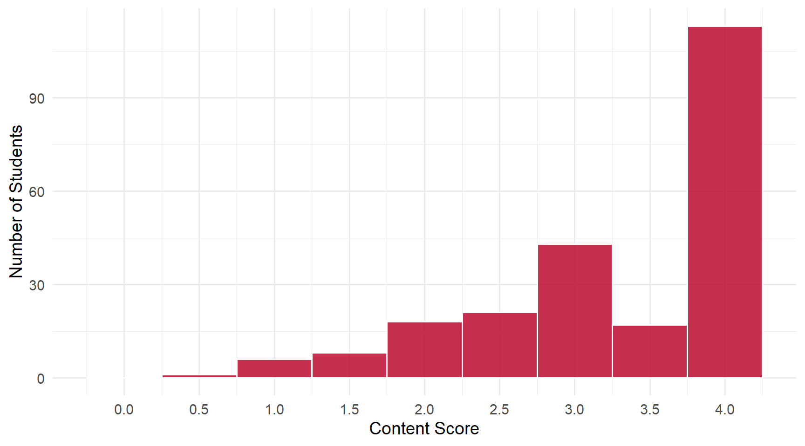
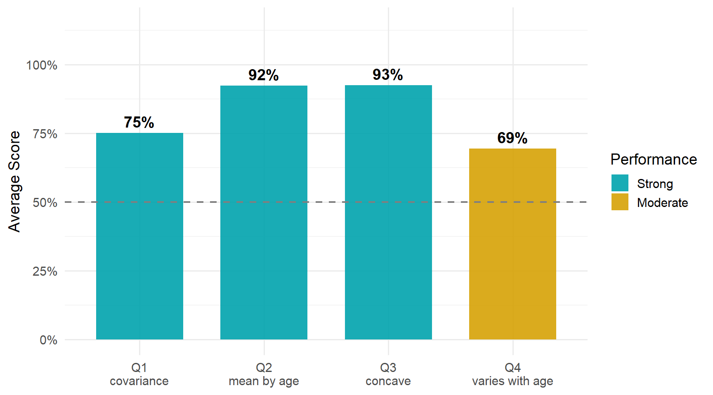

3 Daily 06 — Sep 8
3.1 Class Performance
Students: 227 | Content mean: 3.29 / 4 | Median: 3.5 | SD: 0.87 | Mean daily score: 9.65 / 10
Content scores ranged from 0.5 to 4 out of 4. (Your daily score adds the 8-point attendance credit for submitting; each question is worth 0.5 of the remaining 2 points.)
Two things are worth taking from this daily. The first is a mix-up between a formula and the example it describes, which showed up on Q1 and Q2 from opposite directions. The second is Q3, which came back from Daily 05 on purpose to see whether one word had stuck.
3.2 Score Distribution
3.3 Performance by Question

ImportantThe pattern worth taking from this daily
Q1 and Q2 tripped on the same thing, from opposite directions.
- Q1 was a formula written in \(X\) and \(Y\). A number of answers filled its blanks with age and earnings — the variables from Figure 7.
- Q2 was about \(E(\text{earnings} \mid \text{age})\). Its most common error filled the blank with \(X\) — the generic letter from a formula.
A formula and an example are two levels of the same idea. The formula is written in general letters so that it applies to any pair of variables; the example plugs in a particular pair. Neither level is wrong — but each question tells you which one it is asking about. When the question hands you \(X\) and \(Y\), answer in \(X\) and \(Y\). When it hands you earnings and age, answer in earnings and age.
3.4 Questions
3.4.1 Q1: The expression \(E\{[X-E(X)][Y-E(Y)]\}\) defines the ___ between ___ and ___.
TipCorrect Answer
The covariance between \(X\) and \(Y\): \[\text{Cov}(X,Y) = E\{[X-E(X)][Y-E(Y)]\}\]
It is the expected product of the two variables’ deviations from their means. The order of \(X\) and \(Y\) does not matter — covariance is symmetric.
WarningCommon Errors
- “Relationship.” The most common miss. Covariance does describe a relationship, which is why the word feels right — but “relationship” names the idea, not the quantity. The blank asks what the expression is.
- “Variance.” This is the error the question was written to catch. Variance is \(E\{[X-E(X)]^2\}\): one variable’s deviations, squared. Covariance multiplies the deviations of two different variables. If you see two different brackets, you are looking at two variables. Several students wrote “variance” and then added “co” in front — exactly the right correction.
- “Difference,” “gap,” or “change.” These read the pieces inside the brackets — each one is a deviation from a mean — rather than what the whole expression computes from them.
- Age and earnings in place of \(X\) and \(Y\). Covariance was right; the variables came from Figure 7 instead of from the formula. See the callout above.
- “Correlation.” A close cousin: correlation is covariance rescaled by the two standard deviations, so that it always lands between −1 and 1. Right family, different quantity.
- “Expected value.” That names the outer \(E\{\,\}\) — the operation — rather than the quantity the whole expression produces.
Misspellings of the right word (“covarience,” “convariance”) were everywhere and cost nothing.
3.4.2 Q2: To estimate \(E(\text{earnings} \mid \text{age})\), plug in the sample ___ earnings for each value of ___.
TipCorrect Answer
The sample mean (average) earnings, for each value of age. The CEF is an expectation within each age, so its sample version is the average of earnings within each age.
WarningCommon Errors
- “\(X\)” in place of “age.” The most common error by a clear margin. The statistic was right, but this question is about \(E(\text{earnings} \mid \text{age})\) — the variable being conditioned on has a name, and the name is age. A few students wrote “\(X\) (age),” tying the letter to the variable, and that earned full credit.
- “Median.” A different statistic. The CEF is an expectation, and the sample counterpart of an expectation is a mean.
- Something other than a statistic in the first blank — “estimate,” “amount,” or “sample” repeated from the question.
- Only one blank filled.
3.4.3 Q3: A quadratic in age captures the ___ shape of the relationship between earnings and age.
TipCorrect Answer
Concave — concave down. Earnings rise quickly early in a career, flatten out, and turn down. A quadratic in age with a negative squared term traces that hill.
WarningCommon Errors
- “Curved.” By far the most common miss — and it is true, which is exactly why it is not the answer. A convex curve is curved too. “Concave” tells you which way the relationship bends, and that direction is the whole content of the answer.
- “Nonlinear” with no direction — the same problem as “curved.”
- Distribution vocabulary — “skewed,” “lognormal.” Those words describe how one variable’s values are spread out. This question is about the shape of a relationship between two variables.
ImportantWorth Your Attention
This question came back from Daily 05 on purpose. There, the class had just worked through Figure 7 together, and 99% wrote “concave.” Here, a few days later and graded against exactly the same standard, the figure was 93% — and most of the difference is one substitution: “curved” in place of “concave.”
That is what forgetting usually looks like. The picture survived; the precise word decayed into a vaguer word that is still true — and the thing lost in the decay was the direction. When you rehearse a term, rehearse it with its meaning attached: concave means it bends downward, like a hill. A word tied to a meaning has something to hold on to.
3.4.4 Q4: With a quadratic in age, the difference in earnings from one age to the next varies with ___.
TipCorrect Answer
With age itself. Write the model as \[E(\text{earnings} \mid \text{age}) = \beta_0 + \beta_1\,\text{age} + \beta_2\,\text{age}^2 .\] The change in predicted earnings from age \(a\) to age \(a+1\) is \[\beta_1 + \beta_2(2a + 1),\] which depends on \(a\). With \(\beta_2 < 0\) it is large early in a career, shrinks toward zero near the peak, and turns negative after. In a linear model there is no squared term, and the change is \(\beta_1\) at every age.
WarningCommon Errors
- Left blank — this was the most-skipped question on the daily.
- “Gender.” The most common wrong answer. It answers a different question: gender is what earnings differ by in the earnings-gap discussion. Here the question is what the year-to-year change along the age curve depends on — and that curve is a function of age alone.
- Describing the pattern instead of naming the variable — “diminishing returns,” “marginally smaller increases,” “concavity,” “non-linearity,” “time.” These show you understand that the change is not constant, which earned half credit. But the blank asks what it varies with, and the answer to that is a variable.
- The squared term instead of the variable — “age squared.” The squared term is why the change varies. The thing it varies with is age.
- The quantity that changes, not what it changes with — “earnings.”
3.5 What the Class Did Well
Q2 and Q3 both landed above 90%. Estimating a CEF by averaging within each age, and the shape of the earnings–age relationship, are both largely in place.
Almost nobody thought the Q4 change was constant. That was the misconception Q4 was written to catch, and it barely appeared. The idea that a quadratic’s slope changes as you move along it has landed — the misses on Q4 were about naming what it changes with, not about whether it changes.
The word “covariance” arrived, even when its spelling didn’t. Several students also caught themselves mid-answer — adding “co” to “variance,” or striking out “curved” for “concave” — which is the habit of checking that prevents exactly these errors.
3.6 What to Review
- Keep the formula and the example apart. \(X\) and \(Y\) belong to a formula; age and earnings belong to the example. Each question tells you which level it is asking about — answer at that level.
- Variance versus covariance. One variable’s deviations squared, versus two variables’ deviations multiplied together.
- Concave, with its direction. It bends down, like a hill. “Curved” does not say which way.
- A quadratic’s slope depends on the variable. From age \(a\) to \(a+1\) the change is \(\beta_1 + \beta_2(2a+1)\) — so it varies with age.
- When a blank asks what something varies with, name a variable. A description of the pattern shows understanding, but it is not the variable.
NoteHow this was graded
Every paper was scored twice, independently, against the same published rubric, by graders who could not see each other’s scores or your name. The two passes agreed on more than 99% of all scores; the handful of disagreements were reviewed a third time against the rubric and settled with a written reason. Submitting the daily earns 8 of 10 regardless of content.